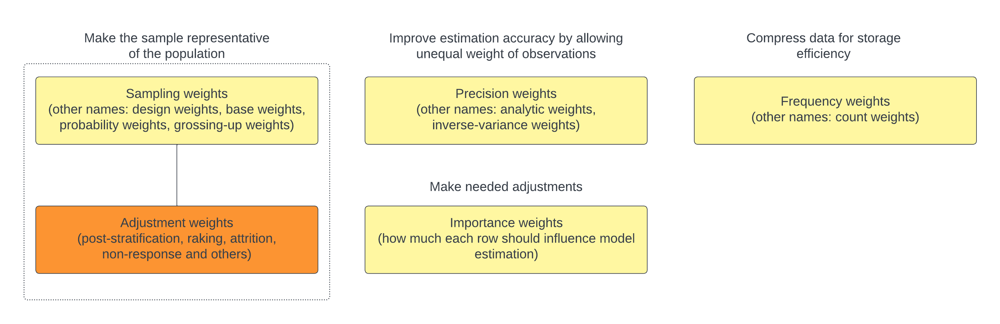
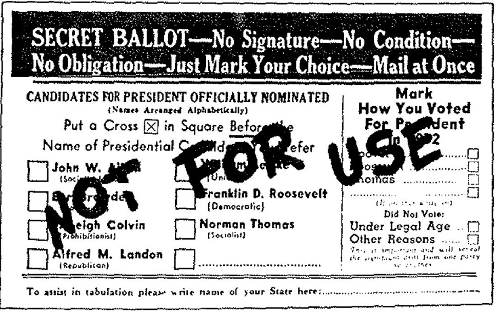

library(survey)
library(tidyverse)
data(api)
# Set options to adjust for potential issues with single primary sampling units (PSUs)
options(survey.lonely.psu = "adjust")
options(survey.adjust.domain.lonely = TRUE)
# Define the survey design
srs.design <- svydesign(id =~ 1, # no clustering (all data has equal PSU)
weights = ~pw, # sampling weights
data = apisrs)
# Run a linear regression with sampling weights
ols_sampling_weights <- svyglm(api00 ~ meals, design = srs.design)Survey weighting is a mess. — Andrew Gelman
Recently, many clients have come to us with questions about weights – how to create weighted statistics? how to conduct weighted regressions? When I ask about the specific weights they’re referring to, many seem unsure. This confusion underscores the complexity of discussions surrounding weights. Motivated by these encounters, I started looking into different types of weights, and what weighting can and cannot do. In this blog post, I will address common misconceptions surrounding these questions and hopefully bring clarity to how weights should be understood and used in statistical practices.
There exists more than one type of weights
The first common misconception is that when people talk about weights in statistics, they are all pointing to the same concept. This is not the case, as highlighted in the insightful discussions by Thomas Lumley and Andrew Gelman. Building upon their work, I will provide visual and code demonstrations below to illustrate the differences between various types of weights.

Lumley and Gelman identify four primary types of weights in statistics: sampling weights, precision weights, frequency weights, and importance weights, which are highlighted in yellow boxes in this graph. I included alternative names that are commonly used to describe each type of weights.
What does a weight of 100 mean for each type of weights?
A of 100 indicates that the observation represents 100 individuals in the population. Alternatively, the probability that this observation was selected from the population to the sample is 1/100. This helps to ensure the sample is representative of the population.
A of 100 means that the observation’s variance is 100 times less than that of an observation with a precision weight of 1. This weighting is used to enhance the estimation efficiency like OLS, where typically each observation is equally weighted. By using precision weights, observations with lower variance (and thus higher precision) have a greater influence on determining the line of best fit.
A of 100 suggests that there are 100 identical observations in the sample. To save space and processing power, only one value is used to represent these observations.
Importance weights are different from the other types. Lumley provides a good example related to dual-frame sampling. When your sample comes from two overlapping sampling frames, it’s crucial to properly account for individuals who appear in both frames to prevent double-counting. In such cases, importance weights are applied to adjust for the overlap, typically by dividing the original sampling weights by 2 of those duplicated individuals.
Additionally, I introduced a fifth category – adjustment weights – marked in an orange box. Adjustment weights are often used to rectify discrepancies between the sample and the population, addressing issues such as respondent attrition and non-response through techniques like post-stratification and raking. You might also have heard of terms like “longitudinal weights” or “cross-sectional weights” which often appeared in public health research. These terms fall under the umbrella of adjustment weights. While adjustment weights typically complement sampling weights, they can extend to non-probability samples as well.
Below I turn to each type of weight using the California Academic Performance Index data from the survey package. We’ll work with the apisrs dataset, a simple random sample of 200 schools where sampling weights are included (pw). Our goal is to analyze the relationship between academic performance in the year 2000 (api00) and percentage of economically disadvantaged students (meals).
Sampling weights
We incorporate sampling weights pw into our survey design, which serves as the foundation for further analysis.
Precision weights
We can manually create precision weights and incorporate them in the weights= argument from the glm() function. The basic idea is that if the variance is heteroscedastic (unequal across observations) and depends linearly on the fitted values, we could use the inverse of these fitted values as weights. Alternatively, if we already have an estimate of the variance for each observation from prior knowledge, we could also directly use those values to compute the inverse variance weights.
# Fit a traditional OLS model
ols <- glm(api00 ~ meals, data = apisrs)
# Estimate variance (assuming variance of residuals might depend on the magnitude of fitted values)
ols_var <- glm(I(residuals(ols)^2) ~ fitted(ols), data = apisrs)
# Compute precision weights as the inverse of the estimated variance
precision_weights <- 1 / fitted(ols_var)
# Fit the weighted least squares model with precision weights
ols_precision_weights <- glm(api00 ~ meals, data = apisrs, weights = precision_weights)Frequency weights
Assuming we want to store data at the student level rather than the school level, we could generate frequency weights that represent the number of students in each school, and run our analysis on the uncompressed data.
set.seed(123)
# For simplicity, assume the number of students per school ranges from 1 to 3
apisrs$frequency_weights <- sample(1:3, size = nrow(apisrs), replace = TRUE)
# Construct individual-level dataset
apisrs_individual <- apisrs %>%
uncount(weights = frequency_weights, .id = "cds")
# Run a linear model on the uncompressed data
ols_frequency_weights <- glm(api00 ~ meals, data = apisrs_individual)Adjustment weights
Assume that we under-sampled middle schools and high schools, and we want to correct this imbalance and ensure our sample mirrors the known population breakdown by school types, this is where adjustment weights come into play.
# Assume we know population totals for each school type
pop_totals <- data.frame(
stype = c("E", "M", "H"),
Freq = c(500, 300, 200) # hypothetical population sizes for Elementary, Middle, High
)
# Post-stratification
post_design <- postStratify(srs.design, strata = ~stype, population = pop_totals)
# Run a linear model with the updated design
ols_adjustment_weights <- svyglm(api00 ~ meals, design = post_design)It is worth noting that adjustment weights are still useful even when we don’t have sampling weights. For example, in respondent-driven sampling, where the selection probability of each respondent is unknown and individuals with larger social networks are likely over-represented, we could improve sample representativeness using adjustment weights that are inversely proportional to the number of social connections for each respondent.
Non-probability samples hold promise when paired with careful weighting
Another misconception is that many tend to hold a dismissive stance towards non-probability sampling, including American Association of Public Opinion Research (AAPOR) in 2014. A frequently cited example of non-probability sampling’s pitfalls is the 1936 Literary Digest poll, which incorrectly predicted the outcome of the 1936 U.S. presidential election due to its unrepresentative sample of the magazine’s subscribers.

However, the benefit of probability samples might not come true for every project. In scenarios where response rates are extremely low, a probability sample might not offer more accuracy than a non-probability convenience sample. Moreover, the application of weighting techniques can significantly enhance the accuracy of non-probability samples, making them viable for reliable estimates.
Selecting appropriate variables for weighting then becomes crucial. An ideal auxiliary vector should (1) strongly predict the outcome of interest, (2) strongly predict the probability of responding, and (3) correspond to domains of interest (Caughey et al., 2020). For instance, Lohr and Brick’s 2017 analysis demonstrated that using voter data from the 1932 election to weight the Literary Digest’s sample could have accurately predicted Roosevelt’s victory in the 1936 election.
It’s also worth mentioning that a well-chosen auxiliary vector can potentially reduce both bias and variance (Little and Vartivarian, 2005), especially when the first two conditions above are met. If achieving both is not possible, it’s generally better to prioritize the former (outcome) over the latter (probability of response).
Nonetheless, identifying a suitable auxiliary vector for weighting is not always straightforward. Consider Gelman’s project which used an opt-in poll from the Xbox gaming platform before the 2012 presidential election. This sample was unrepresentative, skewing towards younger and more male respondents. Gelman and his team chose to use party ID to reweight the data. Partisanship is not often used for weighting because it varies over time and is not readily available from census data where demographic variables are often included for weighting. Despite these challenges, the results are impressive – the adjusted estimates aligned well with forecasts from leading poll analysts!
Weighting in regressions still needs careful considerations
When analyzing survey data, sampling weights and adjustment weights are often discussed. A key question that arises is: when do we need to incorporate weights? One general consensus is that the need for weights depends on the research purpose: weights become more crucial when estimating population descriptive statistics but less so when examining the relationship between predictors and the outcome.
However, even in regression analyses, there are circumstances where unweighted data may be preferred to weighted, and vice versa. Below are some important considerations for deciding whether to incorporate weights:
-
Relationship between weights and the outcome (Y)
- If the sampling weights are dependent on the outcome (Y), such as in case-control sampling, we should incorporate weights. For instance, if high values of Y are more likely to be sampled, omitting weights could introduce bias.
-
Relationship between weights and the predictors (X)
When sampling weights are a function of the predictors (X) included in the model and does not depend on outcome (Y), unweighted model estimates are often preferable. These estimates tend to be unbiased, consistent, and exhibit smaller standard errors compared to their weighted counterparts.
Even when weights are associated with the outcome (Y), some researchers still recommend first re-specifying the model to ensure that weights depend solely on the predictors (X). If this re-specification is feasible and effective, using the unweighted model is again preferred.
References:
Andrew Gelman and David Rothschild, 2014. “Modern polling needs innovation, not traditionalism”. The Washington Post.
Andrew Gelman, 2014. “Tracking public opinion with biased polls”. The Washington Post.
Andrew Gelman, 2007. “Struggles with Survey Weighting and Regression Modeling”. Statistical Science, 22(2): 153-164.
Devin Caughey, Adam J. Berinsky, Sara Chatfield, Erin Hartman, Eric Schikler, and Jasjeet S. Sekhon, 2020. “Target Estimation and Adjustment Weighting for Survey Nonresponse and Sampling Bias”. Cambridge University Press.
Gary Solon, Steven J. Haider, and Jeffrey M. Wooldridge, 2015. “What Are We Weighting For?”. The Journal of Human Resources, 50(2): 301-316.
Sharon L. Lohr and J. Michael Brick, 2017. “Roosevelt Predicted to Win: Revisiting the 1936 Literary Digest Poll”. Statistical, Politics and Policy, 8(1): 65-84.
Thomas Lumley, 2024. “Importance weights”.
Thomas Lumley, 2020. “Weights in statistics”.
Christopher Winship and Larry Radbill, 1994. “Sampling Weights and Regression Analysis”. Sociological Methods & Research.